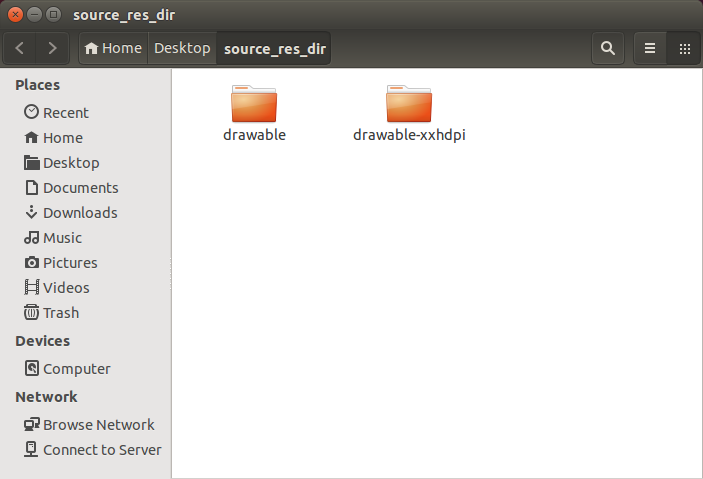
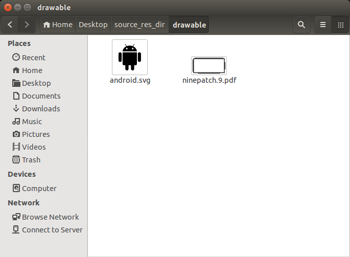
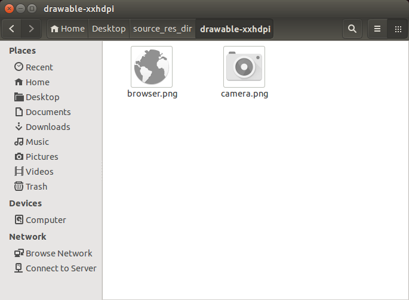
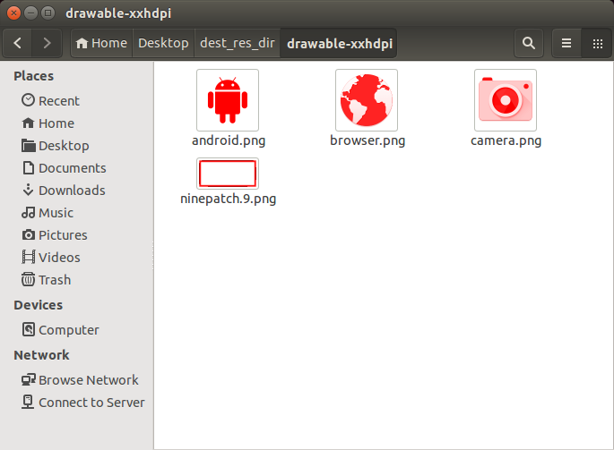

Sorolla is a simple Python package that provides an easy way to scale, tint and color-fill any kind of image.
It is especially designed for Android resources, giving support to Android standard and Nine-patch resources while keeping their properties. It also supports vector resources, such as .pdf and .svg.
The library also detects if the resource contains the nine-patch resource notation (.9.) in its file name so it can work with it while keeping the nine-patch's properties.
Requirements and installation
In order to use Sorolla you need the following programs installed in your system:
- Python 2.7.x
- ImageMagick and GhostScript installed in the system and available from PATH. Install them from a package management tool or build them from source.
The package has been tested in Ubuntu 14.04, Windows 8.1 & Mac OS X 10.10
If you want to install the package in your current Python instance run:
$ python setup.py installor:
$ python setup.py developif you want to install the library for debugging or testing purposes.
You can also import the library from the sorolla folder and use it directly in your custom scripts.
How to use
Just import the Sorolla class from the sorolla package in your Python script.
from sorolla import SorollaThe Sorolla class exposes the following static methods:
Sorolla.color_resource(source_file, dest_file, fill_color)
Colors a raster resource; detects if it's a nine-patch via filename in order to color it properly
Arguments:
source_file Source file to color. Path can be relative or absolute dest_file Destination file where the colored file will be saved. Path can be relative or absolute fill_color Color to fill the resource. Must be a RRGGBB string.Returns: Whether the action could be run or not
Sorolla.scale_resource(source_file, dest_file, scale)
Scales a resource; detects if it's a nine-patch via filename in order to scale it properly
Arguments:
source_file Source file to convert. Path can be relative or absolute dest_file Destination file where the converted file will be saved. Path can be relative or absolute scale Scale value as a float. If it's greater than zero, the function upscales the image; if less than zero, it downscales the imageReturns: Whether the action could be run or not
Sorolla.tint_resource(source_file, dest_file, tint_color)
Tints a gray-scaled raster resource; detects if it's a nine-patch via filename in order to tint it properly
Arguments:
source_file Source file to tint. Path can be relative or absolute dest_file Destination file where the tinted file will be saved. Path can be relative or absolute fill_color Color to tint the resource. Must be a RRGGBB string.Returns: Whether the action could be run or not
Examples
You can find an usage example in example.py script.
The script acccepts the following syntax:
$ python example.py source_res_dir dest_res_dir rgb_hex_color_without_#This script takes a source folder containing:
- A drawable folder which contains assets (preferrably .pdf or .svg) that need to be scaled & colored for all of Android's screen pixel densities, using mdpi scale as a base. (in our use-case, pure black resources)
- A number of drawable- folders which need to be tinted (in our use-case, gray-scale & pre-resized nine-patch resources)
and saves the results in another folder ready to import them into an Android project.
Note: the script skips xxxhdpi resource generation, see this excerpt from Android documentation for more details.
Suppose that we have the following folders in "source_res_dir":



If the following command is issued:
$ python example.py source_res_dir dest_res_dir FF0000We'll get the following result:


(Contents in the rest of folders have been skipped)
License
This project is licensed under the Apache Software License, Version 2.0.
Copyright (c) 2015 bq
Licensed under the Apache License, Version 2.0 (the "License");
you may not use this file except in compliance with the License.
You may obtain a copy of the License at
http://www.apache.org/licenses/LICENSE-2.0
Unless required by applicable law or agreed to in writing, software
distributed under the License is distributed on an "AS IS" BASIS,
WITHOUT WARRANTIES OR CONDITIONS OF ANY KIND, either express or implied.
See the License for the specific language governing permissions and
limitations under the License.